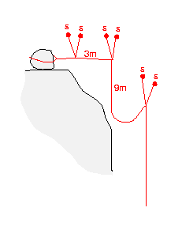

| Pitch | Name | Rope | Belays | Comments |
|---|---|---|---|---|
| 12 | Spider | 14 | 2s | |
| 3 | 7 | 2s | Climb | |
| 25 | 32 | 3s, 1T | ||
| 34 | The Ore Chute | 38 | 4s, 1T | |
| +9 | 1st Bolt Climb | Ladder | Spreader | Old Beal in situ |
| 50 | Very Vunerable | 70 | 6s, 1W | |
| 7 | as above | 2s | Continuation of Very Vunerable | |
| 45 | Pittsburg | 50 | 4s | |
| 51 | The Bus | 60 | 3s, 1P | |
| 15 | 20 | 1W, 1T, 1s | ||
| 37 | 40 | 3s, 1P | ||
| 28 | 30 | 3s | ||
| 22 | 2nd Bolt Climb | 40 | 3s, 1T | 11mm Bluewater in situ |
| 4 | 5 | 1T, 1s | ||
| 9 | Dosser's Despair | 11 | 1W, 1s | Reb. in calcite |
| 11 | ( The | 15 | 1W, 2s | |
| 11 | ( Indelible | 14 | 2s | |
| 4 | ( Escalator | 6 | 1W, 1T | |
| 67 | Murder Most Foul | 73 | 1T, 1W, 2s | |
| 5 | 10 | 1W, 2T | ||
| 41 | Mutiny | 47 | 2s | |
| 5 | 7 | 1W, 1T | ||
| 6 | 9 | 1W, 1s | ||
| 3 | 10 | 1W, 1T | Traverse line helps (included) | |
| 60 | The Bounty | 60 | 2s | |
| 26 | One Step Beyond | 35 | 2s, N | |
| 7 | 8 | 1W | ||
| 8 | Glory days | 11 | 1W, 1T | |
| 10 | 15 | 1T, 1W | ||
| 6 | The Natural Thing | 15 | N, 1T | |
| 6 | 12 | 2T | ||
| 2 | 5 | 1T | ||
| 27 | ( Thunder Down | 30 | N, 2W | |
| 25 | ( under | 30 | 2s, 1W | |
| 3 | 4 | 1T | ||
| 82 | ( Pozo de los | 95 | 5s | |
| 40 | ( Picos | 45 | 2s, 1T | |
| 9 | 12 | 2s |
Explanation of the following system for describing the pitches:
 |
Details given below: Boulder: 2s 3m traverse, 2s: -9m 2s: -40m pendulum s - spit -9m - Depth, ie. 9m below the first bolt(s) + - up C - Climb |
| Ref. | Pitch(m) | Rope | Number of Spits | Comments |
|---|---|---|---|---|
| Entrance | ||||
| P3 | 1 | Boulder, 1s | ||
| 1 | P122 | 155 | 6 | Rope from P3: 2s:-1m 1s:-28m 3s |
| 2 | P47 | 65 | 6 | Boulder: 2s: 3m traverse, 2s-9m 2s:-40m pendulum |
| P5 | 8 | 2 | 2s | |
| P8 | 10 | 2 | 2s (Best Laddered) | |
| C2 | 1 | 1s, short sling | ||
| C4 | Natural, 3m sling | |||
| P4 | 9 | 2 | 2s (Best Laddered) | |
| 3 | P14 | 25 | 3 | 1s: 5m traverse, 2s:-14 pendulum |
| C+7 | Climb up | |||
| P12 | 14 | 1 | 1s (can be climbed) | |
| C4 | Climb down | |||
| P8 | 2 | 2s | ||
| P15 | 25 | 3 | Rope from P8: 2s: -5m 1s | |
| Humbug Hall | ||||
| P8 | 15 | 2 | 2s: and traverse line around head of P60 | |
| C+4 | climb up | |||
| C+5 | climb up | |||
| 4 | P15 | 25 | Numerous dubious natural belays - tapes required | |
| 5 | P24 | 33 | 3 | Boulder: 1s in roof: -8m 1s -18m 1s |
| P3 | 1 | Flake and 1s | ||
| P12 | 20 | 2 | Rope from P3: 1s: -8m 1s | |
| 6 | P11 | 20 | 3 | 1s: 4m traverse 1s: -8m 1s |
| P16 | 20 | 1 | Boulder: -3m 1s | |
| C2 | Climb down | |||
| P13 | 18 | Naturals | ||
| 7 | P10 | 13 | 2 | 2s and 3m wire over edge |
| 7 | P9 | 12 | 2 | 2s |
| 8 | P29 | 35 | 1 | Naturals: -4m 1s |
| C+12 | Climb up | |||
| P12 | 14 | 2 | 1s: 2m traverse: 1s | |
| P16 | 22 | 1 | Natural, 1s | |
| C10 | 12 | Natural, handline | ||
| P5 | 10 | 1 | Natural, 1s | |
| 9 | P16 | 25 | 4 | 1s: 2m traverse 1s in roof: -9m 1s on ledge to left: 1s |
| C3 | Climb down | |||
| C2 | Climb down | |||
| C2 | Climb down | |||
| P29 | 32 | 2 | 2s and tape | |
| P12 | 16 | 1 | Natural, 3m traverse 1s | |
| 10 | P19 | 23 | 1 | Natural, 1s |
| 10 | P12 | 15 | 1 | Natural, 1s |
| Dripping Blood Passage | ||||
| P6 | 8 | 2 | 2s | |
| P36 | 42 | 2 | 2s | |
| P8 | 10 | 2 | 2s | |
| P10 | 12 | 2 | 2s | |
| P12 | 15 | 1 | Traverse over P38, 1s and 2 naturals | |
| C20 | Climb down | |||
| P12 | 15 | Naturals | ||
| 11 | P39 | 45 | 1 | Naturals: -7m 1s |
| C4 | Climb down | |||
| P8 | Naturals | |||
| P14 | 27 | Rope from P8 and naturals | ||
| P5 | 8 | Naturals | ||
| P10 | Naturals | |||
| P9 | 24 | 1 | Rope from P10 and 1s | |
| C3 | Climb down, tape advisable | |||
| P4 | 7 | Naturals | ||
| P8 | Naturals | |||
| P7 | 1 | Rope from P8 and 1s | ||
| P5 | 31 | Rope from P7 and naturals | ||
| P15 | 22 | 1 | 1s | |
| P4 | Natural | |||
| P6 | Rope from P4 and natural | |||
| P13 | 32 | 1 | Rope from P6 and 1s | |
| C3 | Climb down | |||
| P2 | 1 | Natural and 1s | ||
| 12 | P8 | 18 | 1 | Rope from P2 and 1s |
| P17 | 22 | 1 | Natural and 1s | |
| C2 | Tape | |||
| C3 | Climb down | |||
| P5 | 1 | Natural and 1s | ||
| P40 | Rope from P5 and natural | |||
| 13 | P46 | 1 | Rope from P40 and 1s | |
| P53 | 145 | 2 | Natural: -6m 1s: -14m 1s: -23m natural: -40m 1s. Rope from P46 | |
| P8 | 10 | Rope from P53 and natural | ||
| 14 | P10 | 15 | 1 | Natural: 4m traverse 1s |
| C5 | Climb down | |||
| 15 | P9 | 13 | 1 | Natural and 1s |
| Ref. | Pitch(m) | Details |
|---|---|---|
| 1 | 122 | Highly fractured rock, so all three bolts at -28m should be used. Beware of loose rock. |
| 2 | 47 | An awkward pitch with some very soft rock. Each rebelay has two bolts, which should always be used together. |
| 3 | 14 | Pitch out of the Slasher. This is fairly tight at the top and a traverse line is very usedful. |
| 4 | 15 | Death Wish Pitch! The rock is unsuitable for bolts, or any sort of belay. 50mm tape belays should be used and all belays treated as dubious. |
| 5 | 24 | Fractured rock means bolts are not in optimum positions. The rope gets very muddy. |
| 6 | 11 | Loose rock. |
| 7 | 10,9 | Gets wet |
| 8 | 29 | Poor pitch head, The rope gets very muddy. |
| 9 | 19 | Rebelay bolts are on the ledge on the left, looking down. This pitch gets wet. |
| 10 | 19,12 | These get very wet. |
| 11 | 39 | Care is needed with loose rock at the top. |
| 12 | 8 | Very poor bolt in place. |
| 13 | 140 | More rebelays are required. Pitch head is tight. |
| 14 | 11 | Wet. |
| 15 | 9 | Leads straight into the sump. |